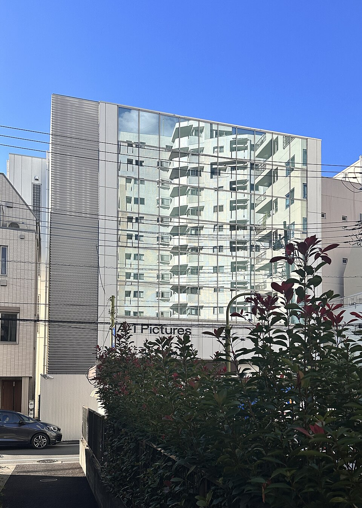
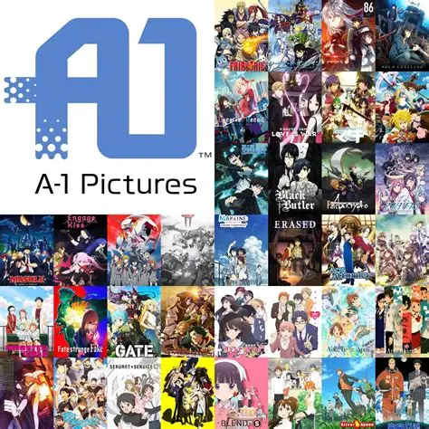

SAO Recording Studio
4 Chome-38-18 Naritahigashi
Suginami City
Tokyo 166-0015
Japan
"A-1 Pictures
A-1 Pictures, Inc. is a Japanese animation studio and production company founded by ex-Sunrise producer Mikihiro Iwata. It is a subsidiary of Sony Music Entertainment Japan's animation production firm Aniplex.

History and other productions
The company was established by SMEJ's animation production division, Aniplex, on May 9, 2005, to animate its animated series and productions. In 2006, it co-produced the original production Zenmai Zamurai, and in October of the same year, established a studio in Asagaya. In the following year, 2007, the studio produced its first series, Ōkiku Furikabutte. Originally established to oversee the production of only a few of Aniplex's family-oriented series, the studio has since grown and expanded as a full-fledged studio involved in the production of a wide range of media and animation productions and other activities, which it has overseen. The studio has also expanded its international presence, participating in the noted international convention, Anime Expo 2007, held in Long Beach, California, and having its own panel there. In 2010, A-1 Pictures worked in collaboration with a joint project of TV Tokyo's animation department and Aniplex called Anime no Chikara for the creation of original animated series. Three animated series were produced that year for the project: Sound of the Sky, Night Raid 1931 and Occult Academy. In April 2018, A-1 Pictures rebranded its Kōenji Studio as CloverWorks, giving it a unique brand identity, which made it distinguishable from its main Asagaya Studio. On October 1, 2018, CloverWorks separated from A-1 Pictures, although it still remains as a subsidiary under Aniplex. On June 17, 2024, the studio 3Hz announced that its animation planning and production business was transferred to A-1 Pictures.
